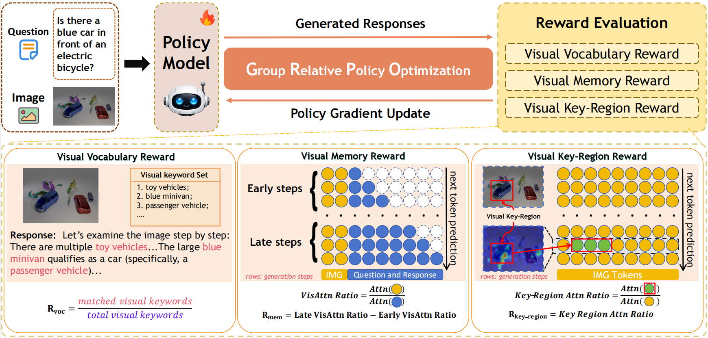
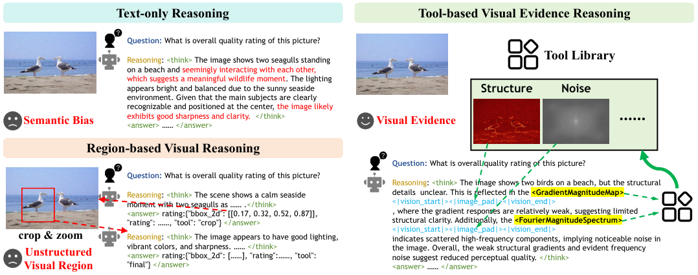
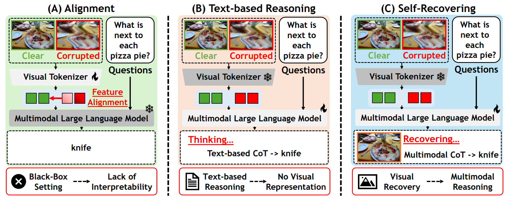
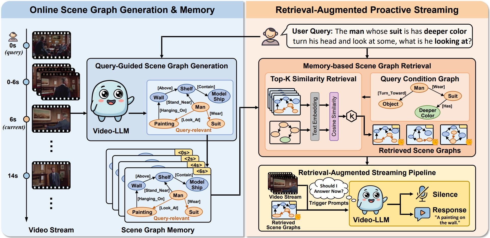

|
Jiaqi Tang I am a Ph.D. student in Dept. of ECE at Hong Kong University of Science and Technology (HKUST), starting from Fall 2025, supervised by Prof. Qifeng Chen. Prior to this, I earned my M.Phil. in AI at HKUST Guangzhou, jointly supervised by Prof. Ying-Cong Chen and Prof. Qifeng Chen, in 2025. Before that, I obtained B.Eng. in Data Science & Big Data Tech. and Business Administration (Minor) with outstanding graduate at Northwestern Polytechnical University, supervised by Prof. Wei Wei, in 2022. I am working closely with Dr. Xiaogang Xu at Zhejiang University. My research focuses on Multimodal Large Language Models (MLLMs) and Agentic AI, including multimodal perception, understanding, and reasoning. If you are interested in my work, please feel free to contact me to discuss related topics or potential collaborations. Email / Scholar / Github / LinkedIn / / HuggingFace / DBLP / ResearchGate / Reddit / RedNote |

Captured at Singapore |
News
• Aug 2026: One paper is accepted by EMNLP2026 (Findings). |
Selective Survey [Full List] |

|
Intelligent Remote Sensing Agents: A Survey
Jiaqi Tang*, Yingying Yan*, Qianzhou Wang*, Yuyang Xia*, Botong Geng*, Jianmin Chen*, Ke Ma, Youyang Zhai, Qingfeng He, Weigeng Shao, Yunjin Sun, Junwei Dai, Chuxi Chen, Xiaogang Xu, Kelu Yao, Lei Zhang, Wei Wei†, Qifeng Chen†, Antonio Plaza, Yanning Zhang Technical Report, 2026 paper / repository Media Report: Synced (机器之心) / X / Reddit A systematic review of 100+ works on intelligent remote sensing agents. |
Selective Research Papers [Full List]
Some representative papers are highlighted.
|
|
 |
Remember-R1: Mitigating Long-Context Visual Forgetting
through Reinforcement Learning
Jianmin Chen*, Jiaqi Tang*, Wei Wei†, Xiaogang Xu, Jiafei Wu, Zhe Liu, Qianzhou Wang, Yingying Yan, Botong Geng, Yuyang Xia, Lei Zhang, Qifeng Chen ACM International Conference on Multimedia (ACM MM), 2026 arXiv / code / model / data / bibtex Media Report: AI Era (新智元) Process-level rewards that sustain visual grounding in long reasoning chains. |
|
 |
IQA-T1: Tool-based Visual Evidence Reasoning for Image
Quality Assessment
Jinjian Wu*, Jiaqi Tang*, Wei Wei†, Yingying Yan, Jianmin Chen, Botong Geng, Lei Zhang, Qifeng Chen† European Conference on Computer Vision (ECCV), 2026 arXiv / code / model / data / demo / bibtex Media Report: QbitAI (量子位) Image quality assessment grounded in tool-generated perceptual evidence. |
|
 |
Robust-U1: Can MLLMs Self-Recover Corrupted Visual
Content for Robust Understanding?
Jiaqi Tang*, Jianmin Chen*, Youyang Zhai*, Wei Wei†, Runtao Liu, Mengjie Zhao, Xiangyu Wu, Qingfa Xiao, Qifeng Chen† International Conference on Machine Learning (ICML), 2026 arXiv / code / model / demo / bibtex Media Report: QbitAI (量子位) / HuggingFace Daily Papers MLLMs that self-recover corrupted inputs before reasoning over them. |

|
Robust-R1: Degradation-Aware Reasoning for Robust
Visual Understanding
Jiaqi Tang*, Jianmin Chen*, Wei Wei†, Xiaogang Xu, Runtao Liu, Xiangyu Wu, Qipeng Xie, Jiafei Wu, Lei Zhang, Qifeng Chen† AAAI Conference on Artificial Intelligence (AAAI), 2026 Oral arXiv / code / model / data / demo / talk / bibtex Media Report: AI Era (新智元) / Synced (机器之心) / CVer / HuggingFace Daily Papers / VALSE 2026 Robustness as explicit reasoning over visual degradations. |
|
 |
Response-G1: Explicit Scene Graph Modeling for
Proactive Streaming Video Understanding
Ke Ma*, Jiaqi Tang*, Bin Guo, Xueting Han, Ruonan Xu, Qingfeng He, Ziheng Wang, Xu Wang, Qifeng Chen, Zhiwen Yu, Yunhao Liu Annual Meeting of the Association for Computational Linguistics (ACL), 2026 arXiv / code / bibtex Media Report: Synced (机器之心) Scene graphs align streaming evidence with query conditions to time responses. |

|
LPO: Towards Accurate GUI Agent Interaction via
Location Preference Optimization
Jiaqi Tang*, Yu Xia*, Yi-Feng Wu*, Yuwei Hu*, Yuhui Chen, Qing-Guo Chen, Xiaogang Xu†, Xiangyu Wu, Hao Lu, Yanqing Ma, Shiyin Lu, Qifeng Chen† Findings of the Association for Computational Linguistics (ACL Findings), 2026 arXiv / code / bibtex Entropy-guided targets and a distance-aware reward sharpen GUI grounding. |

|
RhythmGuassian: Repurposing Generalizable Gaussian
Model For Remote Physiological Measurement
Hao Lu*, Yuting Zhang*, Jiaqi Tang, Bowen Fu, Wenhang Ge, Wei Wei, Kaishun Wu, Ying-Cong Chen IEEE/CVF International Conference on Computer Vision (ICCV), 2025 Highlight bibtex A generalizable Gaussian model repurposed for contactless physiological sensing. |

|
SURGEON: Memory-Adaptive Fully Test-Time Adaptation via
Dynamic Sparsity Activation
Ke Ma, Jiaqi Tang, Fan Dang, Bin Guo†, Sicong Liu, Cheng Fang, Zhui Zhu, Lei Wu, Ying-Cong Chen, Zhiwen Yu, Yunhao Liu† IEEE/CVF Conference on Computer Vision and Pattern Recognition (CVPR), 2025 Highlight code / bibtex Layer-wise activation pruning that cuts test-time adaptation memory. |

|
AdaShadow: Responsive Test-time Adaptation for
Non-stationary Mobile Environments
Cheng Fang, Sicong Liu, Zimu Zhou, Bin Guo†, Jiaqi Tang, Ke Ma, Zhiwen Yu ACM Conference on Embedded Networked Sensor Systems (SenSys), 2024 Best Paper Honorable Mention · Top 7/313 bibtex Selective layer updates give 2x to 3.5x faster on-device adaptation. |

|
Hawk: Learning to Understand Open-World Video
Anomalies
Jiaqi Tang*, Hao Lu*, Ruizheng Wu, Xiaogang Xu, Ke Ma, Cheng Fang, Bin Guo, Jiangbo Lu, Qifeng Chen, Ying-Cong Chen† Annual Conference on Neural Information Processing Systems (NeurIPS), 2024 code / demo / model / dataset / website / bibtex Media Report: Zhihu (知乎) / PaperWeekly / autodriving-heart (自动驾驶之心) / VALSE 2025 Proposes Video Anomaly Understanding (VAU) and its first base model. |

|
An Incremental Unified Framework for Small Defect
Inspection
Jiaqi Tang, Hao Lu, Xiaogang Xu, Ruizheng Wu, Sixing Hu, Tong Zhang, Tsz Wa Cheng, Ming Ge, Ying-Cong Chen†, Fugee Tsung 18th European Conference on Computer Vision (ECCV), 2024 code / project page / bibtex Adds new products to a unified defect inspector without forgetting. |

|
Learning to Remove Wrinkled Transparent Film with
Polarized Prior
Jiaqi Tang, Ruizheng Wu, Xiaogang Xu, Sixing Hu, Ying-Cong Chen† IEEE/CVF Conference on Computer Vision and Pattern Recognition (CVPR), 2024 code / project page / bibtex Polarization priors reconstruct surfaces occluded by wrinkled transparent film. |

|
High Dynamic Range Image Reconstruction via Deep
Explicit Polynomial Curve Estimation
Jiaqi Tang, Xiaogang Xu, Sixing Hu, Ying-Cong Chen† 26th European Conference on Artificial Intelligence (ECAI), 2023 Long Oral code / arXiv / talk / bibtex Explicit polynomial tone-curve estimation for generalizable HDR reconstruction. |
Awards
Best Paper Honorable Mention, Workshop on Subtle
Visual Computing (SVC), CVPR
Gold Reviewer Award, International Conference on
Machine Learning (ICML)
Best Paper Honorable Mention (7/313), ACM
Conference on Embedded Networked Sensor Systems (SenSys)
Best Intern of the Year, SmartMore Corporation
Outstanding Graduate, Northwestern Polytechnical
University
National Scholarship (Top 1/44), Ministry of
Education of the People's Republic of China
Tencent Scholarship — First Class, Tencent
First Class Scholarship, Northwestern Polytechnical
University
Winner (1st Place), Multi-modal Aerial View Object
Classification Challenge, Track 1 (SAR), Workshop on New Trends in
Image Restoration and Enhancement (NTIRE), CVPR
Second Class Scholarship, Northwestern Polytechnical
University
|
Teaching
ELEC 4240: Deep Learning in Computer Vision, Hong Kong University of Science
and Technology
Fall 2026
ELEC 4471: Deep Learning in Computer Vision, Hong Kong University of Science
and Technology
Spring 2026
AIAA 5023: Foundations of Deep Neural Networks, HKUST Guangzhou
Fall 2024
U14M12086S: Introduction of Computer Vision and Image
Processing, Northwestern Polytechnical
University
Summer 2021
|
Professional Activities, Skills & Others
Organizer: |